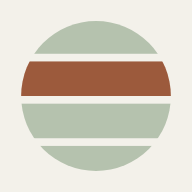

Guided posture scan
Three guided photos, or a full 3D scan of your body. Postura finds your joints and checks how each region lines up against level and plumb.
Each region gets a score, the angles behind it, and a picture showing what was measured. Photos are analysed on your device and never uploaded.
Three guided photos with your phone. Quick, works anywhere.
Prop your phone up and turn slowly on the spot. Postura builds your body in 3D, stands it on a posture grid, cuts it into sections and compares left with right and with earlier scans.
Kept on this device
Before you start
Photo 1 of 3
3D body scan
The video is processed in your browser and never uploaded. Building the body takes about 20 to 60 seconds on a phone.
Your account
Keep your scan results safe and see them on any device. Photos stay on the phone you took them with.
Your account
Check your inbox for a link to confirm this email address.
Your scan results sync to this account, so they are safe if you lose this phone and you can open them on any device. Photos stay on the phone you took them with.
3D body scan
The scan is processed in your browser and never uploaded. A 1 million triangle scan takes about 10 to 20 seconds on a phone.
Measuring your alignment…
Working…

It opens full-screen like an app and works offline once loaded. Nothing to download from a store: it is this website, always up to date.